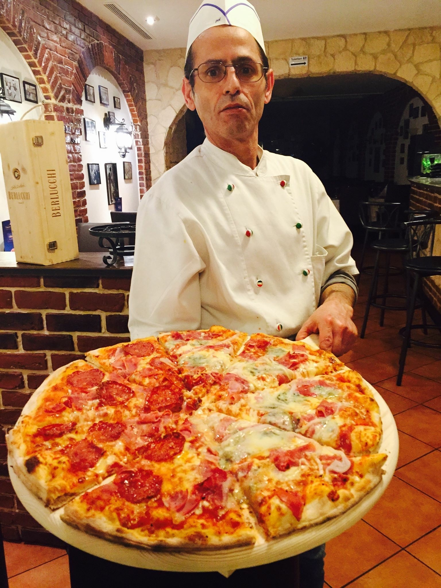
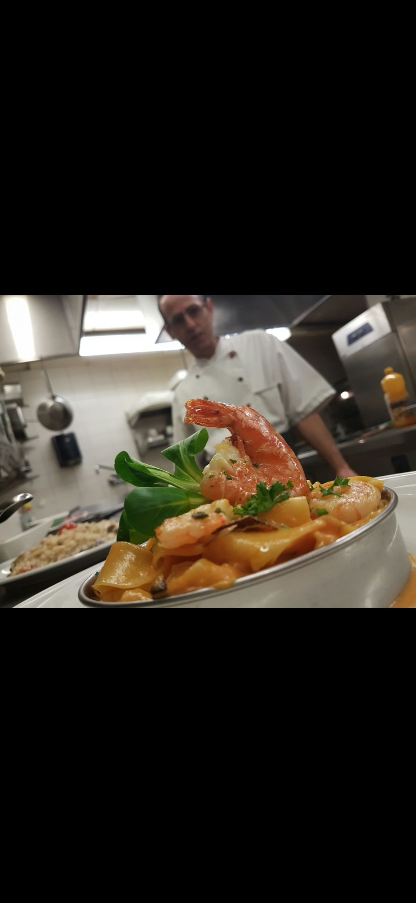

Pizza
Traditionelle italienische Pizza mit ausgewählten Zutaten und der persönlichen Handschrift von Marcello Cogoni.
Italienische Küche, Pizza und Pasta – mit echter Leidenschaft, familiärer Atmosphäre und einem Stück Geschichte aus Lottstetten.
Im Bistro Dolce Serena verbinden sich italienische Küche, Handwerk und die herzliche Atmosphäre eines Hauses mit Geschichte.
Traditionelle italienische Pizza mit ausgewählten Zutaten und der persönlichen Handschrift von Marcello Cogoni.
Spaghetti, Penne und Lasagne – italienische Klassiker, frisch und mit viel Liebe zubereitet.
Ein Ort zum Ankommen, Genießen und Zusammensitzen – ganz nach italienischer Art.

Seit mehr als vier Jahrzehnten steht Marcello Cogoni für Italienische Küche, echtes Handwerk und die Leidenschaft für gute Pizza.
Das Restaurant, in dem heute das Bistro Dolce Serena seine Türen öffnet, trägt ein ganz besonderes Stück Lottstetter Geschichte in sich. Über viele Jahre wurde dieser Ort von der Verbindung italienischer und deutscher Küche geprägt.
Mit dem Bistro Dolce Serena beginnt ein neues Kapitel – unter seiner Führung, mit neuer Energie und doch mit der alten, vertrauten Leidenschaft.


Ob Pizzaabend, Pasta, ein gemütliches Essen mit der Familie oder einfach ein Stück Italien: Wir heißen Sie herzlich willkommen.